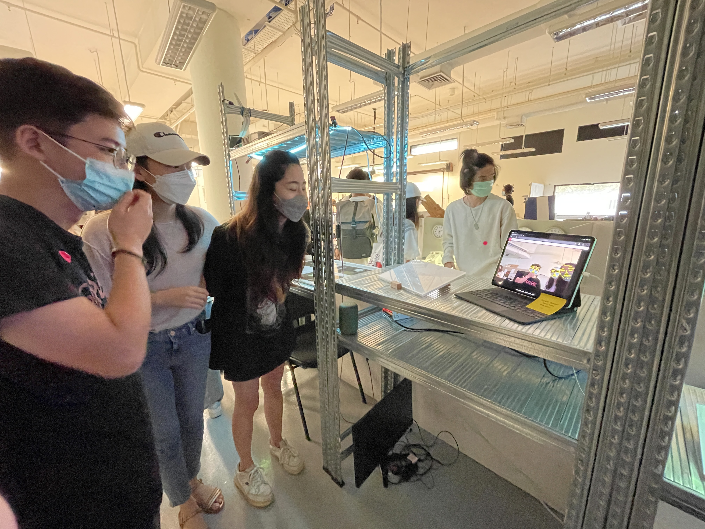
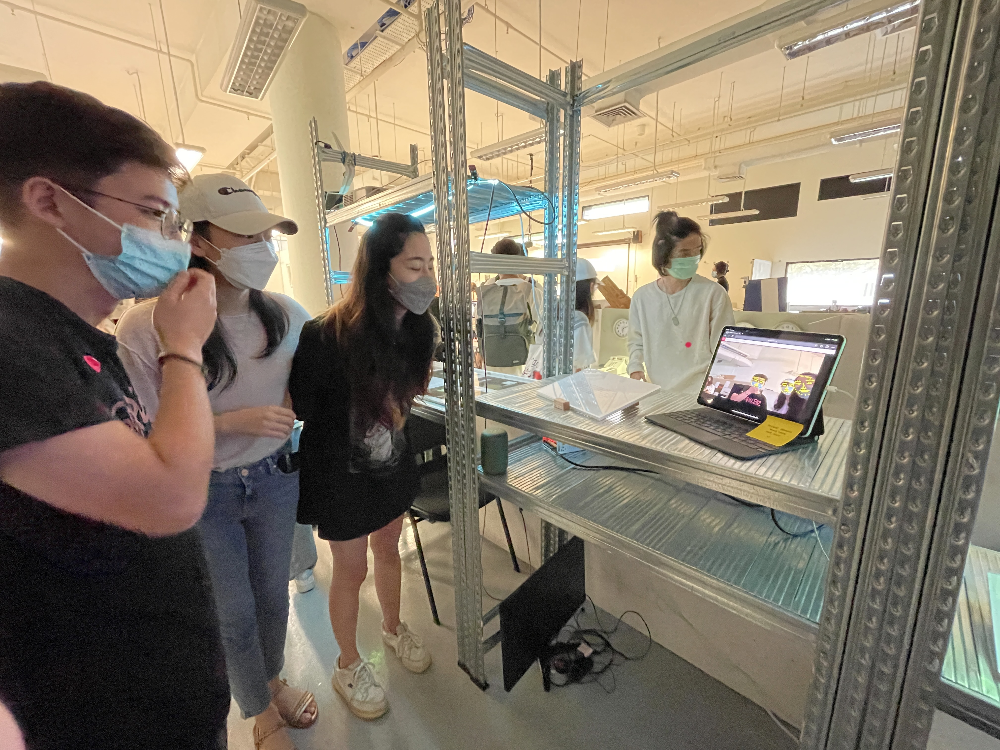

// Semester Two Week Twelve: 28.03.22 - 01.04.22
Graduation Project:
// 28.03.22 - 01.04.22 - Open Studio Happenings, Comments and Feedback.
// 28.03.22 - 01.04.22 - Open Studio Happenings, Comments and Feedback.
Open studio week, I didn't really get much done this week cause I was busy explaining my project to people but I'm glad that I got the chance to talk about the project with different people and hearing their opinions.

 

Im quite grateful to Nadine for giving me the opportunity to present my work to both the President of the school Dixon and the Provost Venka, I think that helped boost my confidence and also forced me to really articulate the project clearly to them. Something that I've been struggling with since I started taking on this research topic. They also gave me some really helpful feedback, Dixon was generally impressed by the work and mentioned that it was timely project especially with how the pandemic was going on (which helps bolster the relevance of the project) and it was interesting to see how he interacted with project, he is quite an expressive guy. Venka on the other hand was alot more reserved but he also brought up a really interesting point about how children growing up in the pandemic are being affected by people wearing masks around them, they're unable to see how people express emotions and so they are finding it difficult to do so themselves and it's this whole thing about learning and relearning how to emote (something that I've sort of thought of but not in this exact words) but he help contextualized my thoughts. This could help kids learn how to emote and help adults relearn how to emote. And lastly he also brough up a point about how this could be used for art therapy and wanted Nadine to put me in contact with one of the Arts Therapy faculty to see where this project could lead to in the future. The mental health possibilities have been in my head since the beginning but I've just been too afraid to tackle such issues without adequate knowledge in the field or the right people to work with on it. I also managed to talk to Gideon about the project and he brought up a really interesting point about how we feel about how we feel, and how we feel about the environment like the emotions being expressed around you. He also brought up an interesting application where what if the light was like mood lighting and it tracks people as they have a conversation over the dinning room table and the lights in the environment change. This is also something andreas brought up once, cause we were talking with one of the prototypes on and it was changing colour as we chatted. This is a really interesting future application that I could think about. Andreas also brought a friend who works at R/GA to check it out and he was interested in what I was doing so that's cool, I've recently thought about applying there to work in creative tech, but imposter syndrome is stopping me, but maybe this is a sign? On top of these major points and some casual feedback from others, I was also really glad to see my classmates enjoying the project and leaving positive notes from the peer to peer review. Honestly I thought the project might be too vague but it seems like most people managed to understand based on what was there. The main feedback im gonna take from the peer to peer is to add a short explainer on what each colour represents.
// End of this Section.
// End of the Week